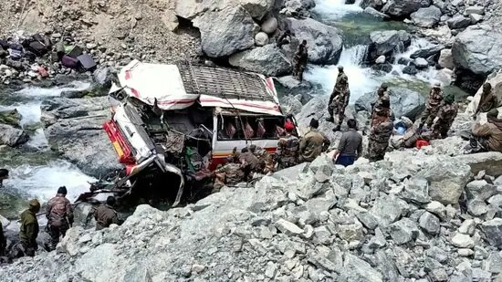
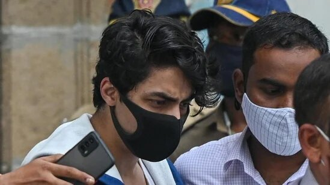
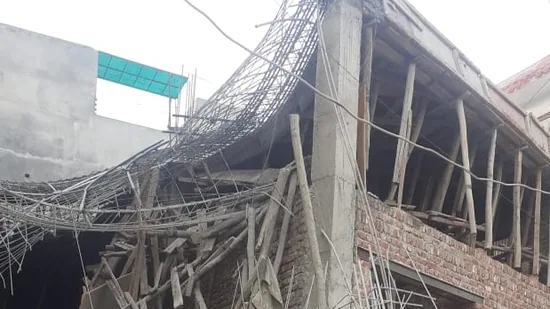

India is among the few countries with which Japan has signed a key agreement for reciprocal provision of supplies and services between their defence forces in order to drive closer military cooperation and contribute to security in the Indo-Pacific.
The accident, in which several other soldiers were critically hurt, happened when the vehicle that was carrying the soldiers from Nubra to Turtuk fell in the Shyok river near Largyab, Pachhathang.
The NCB's deputy director general Sanjay Singh said the previous investigating team couldn't prove the charge of Aryan Khan procuring drugs from his friend Arbaaz Merchant. He added that the WhatsApp chats of Aryan Khan didn't link him to the drugs case.
At least one person was killed and two others injured after roof of an under-construction building collapsed at Firni Road in west Delhi's Mundka on Friday. “We received information about the incident at 5:24pm, following which four fire tenders were rushed to the spot,” news agency PTI quoted fire officials as saying.
